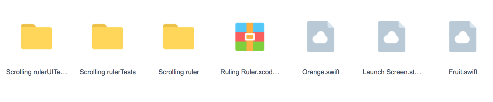
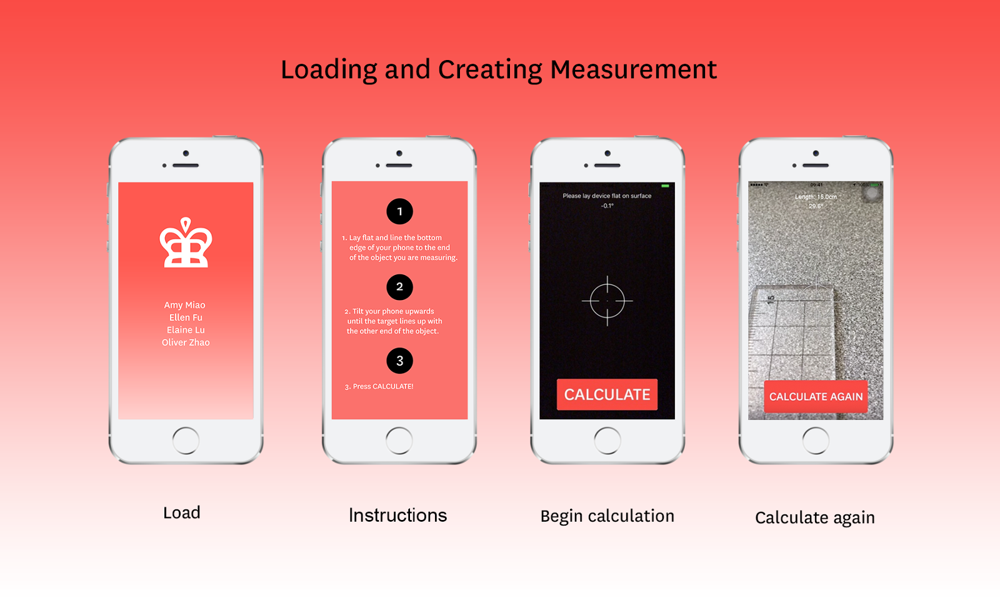
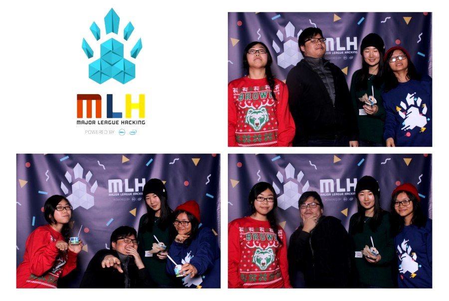

Ruling Ruler
Hack@Brown Project, Winter 2016
Ruling Ruler is an iOS application that measures the length of any object.
I designed and helped build this app with a team of four students from Brown and RISD. Our group was brought together through a brainstorm session that surfaced our mutual interest in digital tools that give people greater convenience in their daily lives. Our solution was to bring a ruler to your phone!
They're a hassle to bring with, and after an app audit, we found no actual actual free working ones on the app store. There were also too many existing utility apps that overcomplicated the simple functions they were meant to serve. So we ended up creating a measuring device that give you the cm & angle degree (of phone tilt) built in Swift. I made the graphics and we combined the functionality of the camera and gyroscope data.
Demo
Ruling Ruler measures the length of any object that the camera points to, according to the angle formed between the object and the phone, with a 1cm margin of error! You begin calibration by laying the phone flat on a surface. The tilt your phone upwards using the bottom of your phone as the vertex. Once the object you are measuring reaches the crosshairs/target graphic at the center of your camera screen, you can tap "calculate" to capture that instance. and see the numerical length of the object as well as angle of the phone tilt.

Process
We had originally planned for our app to measure objects by tracking the acceleration of the phone on one plane. Midway through the hackathon and after consulting three mentors, we found that the accelerometer accumulates to many errors over time for the measurement to be even mildly close to the real length of the object. Because of this hardware limitation, we changed our approach by using gyroscope data instead to build Ruling Ruler.

Feedback
Demo feedback from judges was generally very positive. Many had not seen a application like this one and were impressed that our team of first-years pulled through with their initial idea. The most notable challenge for the app is to make the act and steps to use the measuring device more intuitive, especially during calibration.
As such, we added an onboarding instruction screen with brief descriptions and steps on how to use the tool. Alternatively, these instructions could also appear as pop-up text boxes on the main screen and guide users through activity and actions.

Next Steps
Given more time, we will develop our app to be able to detect rotation along different axes so that the user can also calibrate the angle by holding the phone to a wall and rotating it off the wall (when parallel to the ground). We also want to include more options within the app to allow users to change the units of length and to include a simplified instructions feature so the app is easier to understand. It would also be cool to come up with an algorithm using the motion data in the phone that allows users to measure the length of curved objects, as well as create interactions and work on features that improve overall UX.
